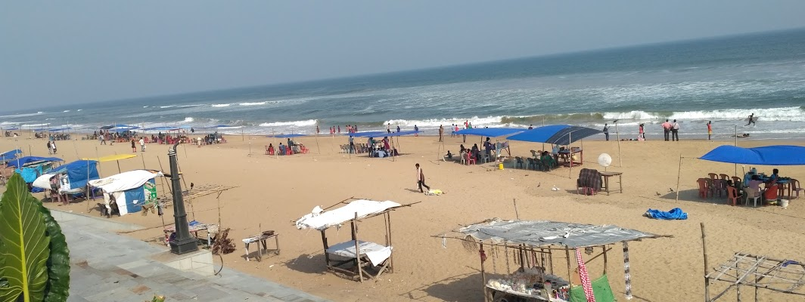

|

|
In the southern coastline of Odisha just 15 km from the city of Behrampur is located a quaint, tiny town of Gopalpur which was a sea port, bustling with trade and commerce, in the Colonial Era.
What was once a bustling port city before being deserted, is today, one of the best beaches in the eastern coastline of the country. It is know for being an offbeat destination and a place for relaxation. The sea port remains though largely in ruins, the British have gone too but what remains is one of India's most loved beaches. The Gopalpur-on-sea is considered to be one of India's most beautiful beaches largely due to its remoteness, its peace and its offbeat crowd. The beaches are sparkling gold which along with the azure water of the Bay of Bengal providing a perfect place to relax and immerse yourself in nature. Besides the beach, the food is also pretty great in the town with many shanties providing tongue tickling sea food. Gopalpur is rapidly becoming one of the most sought after beaches in the country, with more and more people becoming aware of its beauty.
|